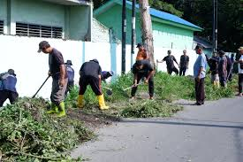

Contoh Bela Negara melalui Gotong Royong di Lingkungan Masyarakat
Menjaga lingkungan berarti ikut menjaga keutuhan Negara Kesatuan Republik Indonesia (NKRI).
Gotong royong di lingkungan masyarakat menunjukkan kepedulian, kebersamaan, dan tanggung jawab sebagai warga negara.
Contoh kegiatan gotong royong di masyarakat:
• Kerja bakti membersihkan lingkungan
• Menolong tetangga yang sedang kesulitan
• Menjenguk tetangga yang sakit
• Mengikuti kegiatan peringatan 17 Agustus
• Kerja bakti membangun masjid atau pos ronda
• Bergotong royong saat panen raya
• Membantu kegiatan keagamaan seperti Maulid Nabi
• Membantu pengurusan jenazah
• Membantu pelaksanaan pemilu
• Menjaga keamanan lingkungan melalui siskamling
Dengan aktif dalam kegiatan tersebut, kita telah menunjukkan sikap bela negara melalui tindakan nyata di lingkungan masyarakat.